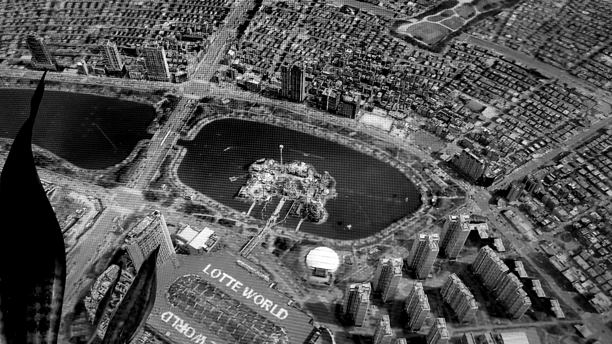
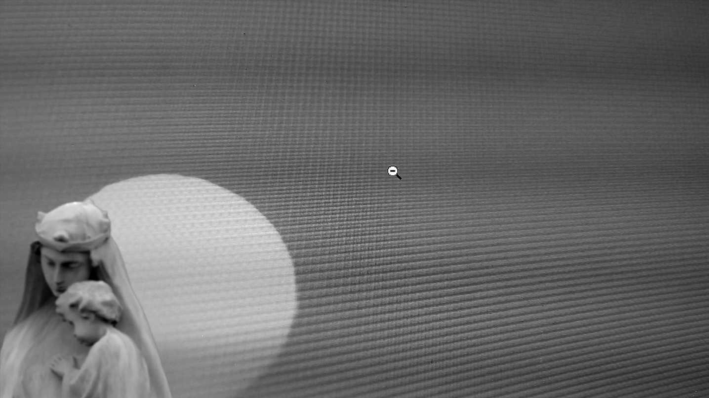
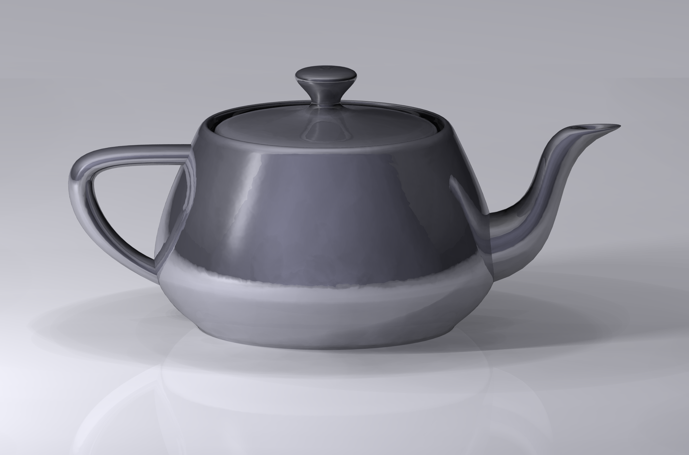
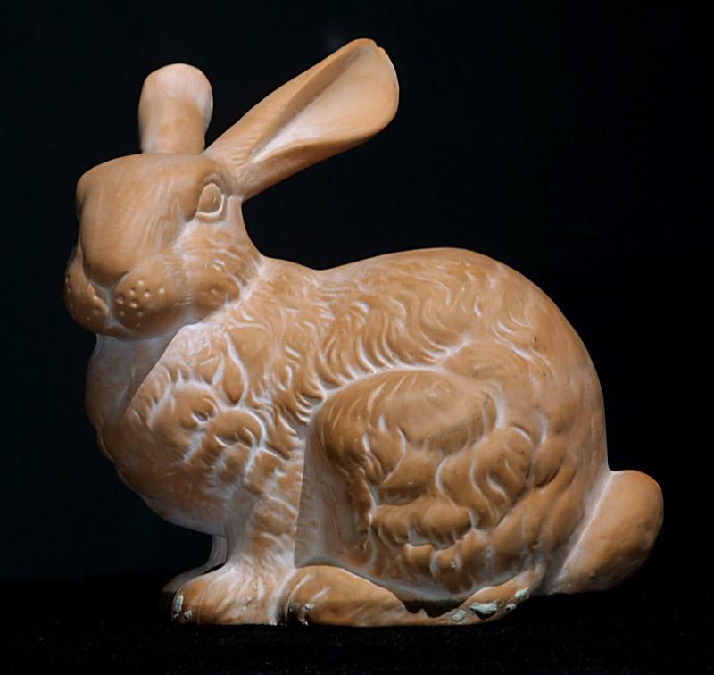
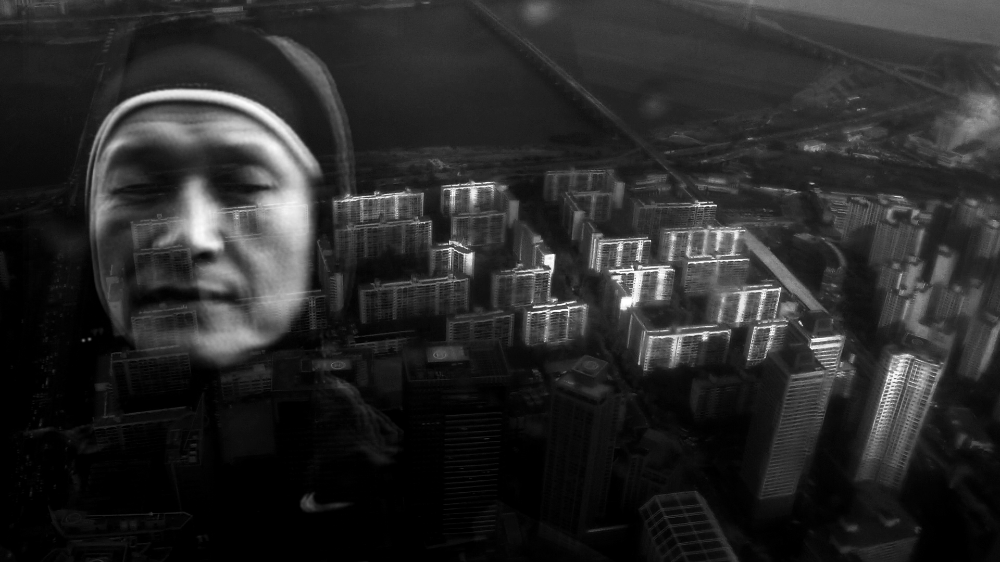
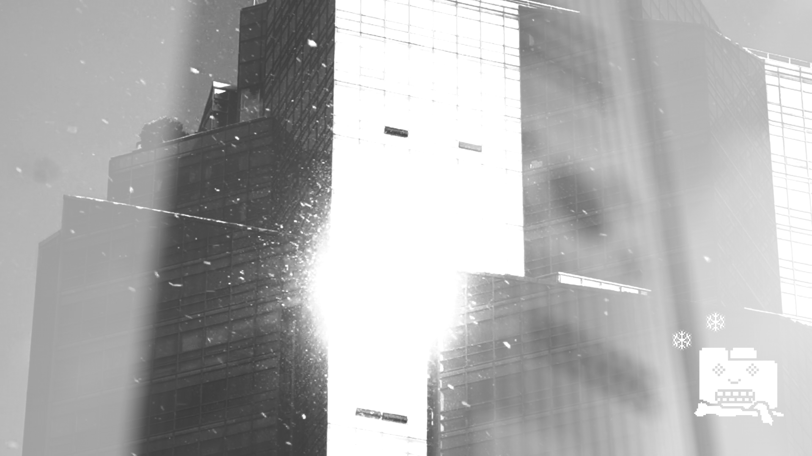
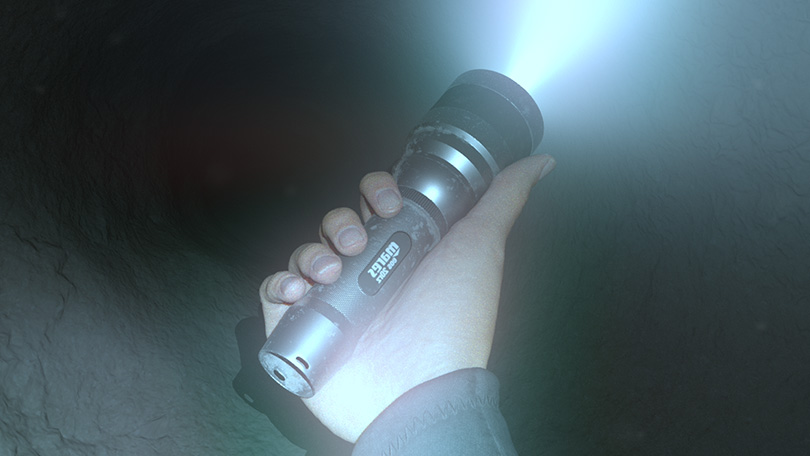
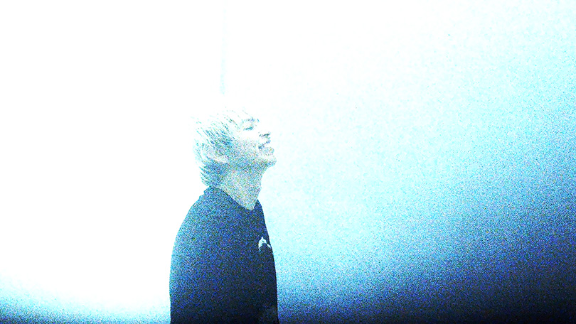

0.
김희천 작가 연구.
처음 이 연구에 대해 생각했을 때는
(그의 작업을 시간순으로 나열하고 각 작업에 대해 서술하는 방식의) 선형적인 연구나.
혹은 작업에서 도출할 수 있는 키워드로 카테고리를 만들어 키워드별로 연구를 진행하고자 했으나, 그렇게 하지 않기로 했다.
이유는
선형적 연구:
1. 내가 직접 본 그의 작업은 ‘바벨(2015)’과 ‘탱크(2019)’뿐이다.
2. 인터넷을 열심히 뒤져봤지만, 영상 형태로 게시된 그의 작업은 이미 저작권 신고로 삭제된 유튜브의 어떤 영상과 비메오 ‘East Comtemporary’ 계정의 짧은 클립 밖에 없다.
3. 결국 많은 필자들이 남겨둔 그의 작업에 대한 텍스트와 스틸컷으로 그의 작업을 더듬어 가며 유추할 수 밖에 없다.
4. 이 연구 발표를 듣는 사람들도 아마 나와 비슷한 상황일 것이기에, 더듬어 유추해 온 것을 발표하면 장님들이 코끼리가 어떻다! 하는 상황이 될 것이다.
키워드별 연구:
1. 그의 작업에 엮이는 몇가지 키워드가 있다.
2. 하지만 이것들을 깔끔하게 카테고리화하지 못했다.
3. 각 키워드는 서로에게서 완전히 독립적이지 못하며, 유동적으로 링크되어있기 때문이다. (더군다나 각 키워드에 대한 나의 이해가 깊지도 못하다.)
4. 딱딱 구분지어서 이야기하기는 어렵겠다는 결론에 이르렀다.
결과적으로 머릿속을 뒤죽박죽 떠나니고 있는 그의 작업에 대한 단어들에.
하이퍼링크를 달아 주는 방식으로. 정리하고 전달해야겠다고 생각했다.
1.
텍스트.
한국 동시대 미술 마을의 주민들이 그의 작업에 대해 텍스트를 작성했다. 그 중 내가 모아 제시하는 것들의 목록이다.
1. 오큘로 1호, X의 눈: 강정석=김희천 연속체 가설 (강덕구), 현 위치: 강정석 x 김희천 대담 (정민구), 2016, 미디어 버스
2. AB 3호 Rigging, 2017, 프레스 룸
3. 계간 시청각 2호, 포스트인터넷 무빙 이미지 아트의 어떤 경항 (김지훈), 2018, 시청각
4. 김희천 – 움직이는 이미지 속에서 살아가기 (윤원화), 2020, theartro.kr
각 저자들은 김희천의 작업을 보고 자신이 본 것에 대한 생각들을 글로 남겼다. 어떤 것은 사뭇 공적이며 진지하지만, 어떤 것은 다소 소소하면서도 개인의 경험에 뿌리를 두고 있다. (이것은 글이 담긴 지면의 영향도 있겠지만, 저자 개인의 특성이 반영된 것 같기도 같다.)
2.
바벨
내가 유일하게 본 그의 작업 두개는 공교롭게도 그의 첫번째 작업이라 할 수 있는 바벨(2015)과 가장 최근 발표된 탱크(2019)이다.
'바벨'은 북서울 미술관의 24.7 (2017) 전시에서 '탱크'는 아트선재센터에서 있었던 동명의 그의 개인전(2019)에서 관람하였다.
바벨 (2015)


single channel video, HD(16:9), B/W, stereo, 21 mins
(이미지 출저 작가 홈페이지: 이미지 클릭시 홈페이지로 넘어갑니다.)
바벨은 국립현대미술관에 소장되어있다.
아래는 소장품 소개 텍스트.
바벨은 작가인 김희천이 여자친구에게 보내는 편지의 형식을 띠고 있다. 2014년 12월부터 네 차례 (12월 8일, 12월 15일, 12월 28일, 1월 1일)에 걸쳐 보낸 편지에는 갑자기 사고로 돌아가신 아버지에 대한 이야기, 사고 이후 작가가 가졌던 복잡한 감정, 작가가 살고 있는 서울이라는 거대한 도시에 대한 생각 등이 녹아 있다.
영상에는 서울의 실제 모습 뿐만 아니라 가상세계의 이미지도 혼합되어 있다. 사실 한국은 어디서든지 가상세계와 접속이 가능할 정도로 뛰어난 첨단 디지털 환경을 갖추고 있다. 그러다보니 때로는 어떤 것이 현실이고 어떤 것이 가상인지를 구별하기 어려워 마치 현실세계와 가상세계가 딱 붙어있는 것 같다고 작가는 말한다. 이러한 현실과 가상의 혼재는 아버지의 사고와 관련된 GPS 데이터에서 잘 나타난다. 사고 당일 행적이 아버지가 착용한 운동용 GPS 시계에 모두 데이터로 기록되어 있었기 때문이다.
3.
나레이션
두 작업 모두 먼저 주목을 끄는 건 스페인어 나레이션이다.
그의 스페인어 나레이션은 어감이 매력적이다.
(매력적인 스페인어를 더 듣고 싶어서 스페인 드라마를 하나 찾아 봤는데 드라마는 별로 재미없었다.)
3-2.
오큘로 1호, 현 위치: 강정석 x 김희천 대담 (정민구), 2016, 미디어 버스
김. 제가 영상을 많이 봤다고 해도 몇 작품 보지 않았잖아요. 집중해서 보고, 오랜 기간 봐 온 영상의 문법은 영화에 더 가깝다고 생각해요. 그리고 관객과의 대화를 하고 싶었으니까 영화스럽게 만들어야겠단 생각을 했어요. 행사 취지상, 사람들이 이걸 보고 뭔지 모르면 질문하기가 어렵잖아요. 어쨌든 따라가는 [서사적인] 라인이 있어야 [사람들이] 보겠다는 생각이 있었죠.
[각주] 김희천 작가는 2015년 1월 ‘반지하’에서 ‘데굴데굴 데모험’을 진행했다. 이는 이후 일민미술관에서 열린 ＜뉴 스킨: 본 뜨고 연결하기＞에서도 진행되었다.
“데굴데굴 데모험 ᕕ( ᐛ )ᕗ은 관객 여러분이 상영회 후 GV에서 작가를 빙고 볼(Binggo ball) 삼아 데굴 데굴 굴려 빙고 게임을 하는 이벤트입니다.”
4.
서울
오큘로 1호, 현 위치: 강정석 x 김희천 대담 (정민구), 2016, 미디어 버스
김. 실은 자연스럽게 나올 수 있었던 게, 시 같은 텍스트를 많이 적었어요. 2014년도에 사진[작업]을 1년 하고, 계속하려니까 어떤 식으로 할지 모르겠더라구요. 물론 사진은 계속 찍었지만, 이미지를 가지고 길을 찾을 수 없겠단 생각이 들었어요. 느낀 것을 글로 쓰는 게 속 시원하다는 생각이 들어서 글을 많이 썼거든요. 그 와중에 아버지께서 돌아가시고 졸업 준비를 했는데, 나중에 작업할 때 [그 당시 쓴 것들을] 종합해서 다시 봤어요. 2014년에 무슨 생각을 하고 살았나. 그걸 보니까 ＜바벨＞ 같은 생각을 하고 살았구나 (웃음). 그게 무겁지 않다고 생각했던 건, 다들 공감할 거라 생각했어요.
강. ...<S/P/A>와 < 바벨>에선 완결된 세계관이 있잖아요. 모든 게 데이터로 된 세상이라든지, 온-오프라인이 합쳐진 삶 속에서 사람들이 모니터 앞 유리에만 함돌되어 살면서 자기가 유리가 된 줄도 모른다든지. 이런 세계관은 편집 과정에서 발견할 수 있는 이야기가 아니잖아요....
그런데 김희천 작가의 영상은 프레임을 어느 정도 짜고 들어간 것처럼 보여요. 그래서 그런 세계관을 느끼던 시점이 언테부터였는지가 더 궁금해요. 그런 걸 미리 느끼고 세상을 그렇게 바라보고 있었으니까 작업이 짧은 기간 안에 나올 수 있었던 것 같거든요.
김. 사실 그런 세계관은 작업을 하면서 나온 게 맞아요. 사진 작업할 때도 그런 경향이 있었어요. 2012년도 말쯤에 세상 망한다고 할 때가 있었고, 그 당시 여자친구가 그런 걸 피부로 느끼던 친구였어요. 진심으로 무서워하고, 집에서 나가지 말라고 하고...
강. (웃음)아니, 2012년 말이 뭔데요? <바벨>에 그게 나오긴 하던데.
김. 마야 종말론 얘기요. 근데 엄청 진지했어요. 집밖에 나가지 말라, 무슨 일이 있어도 집에 있으면 그래도 연락이 되지 않겠느냐고. 그게 웃기기도 했지만, 내가 집에 있으면 뭐하면서 초조해할까 생각하다가, 혜성이 떨어지는 것에 대한 생각을 많이 했거든요. 그게 제일 멋있겠다, 그런 거 사진 찍어 놓으면 좋겠다고 생각하고. 그렇게 그날이 지나고 생각해 보니까, 세상이 이미 망해 있는 것 같았어요. 그러면 망하는 순간이 아니라, 망한 상태를 보여주면, 다 망했다는 걸 알 수 있을까. 이런 생각으로 이것저것 찍기도 했고, 찍는 게 재미있으니까 더 찍기도 했고. 영상에서도 망한 것 같은 서울의 어떤 걸 다 찍어서 모아 놓으면, 다들 망했다는 걸 깨달을 거라 생각했어요. 그 과정에서 찍어 놓고 보니 3D와 잘 어울릴 것 같아서, 왜 어울릴까 그런 생각도 하고요. 예를 들면 모니터 장면도 작업을 하면서 느꼈던 게 있어서 찍었거든요. 3D가 올라가는 장면에서 캡처를 할까, 모니터를 직접 찍을까 하다가 직접 찍었어요.그러면서 그 앞에 있는 화분을 모니터에서 보니까, 내가 저기 있는 것도 아니고 화분 앞에 있는 것도 아니고, 중간에 껴 있는 거구나,란 생각을 했어요.
김. 서울은 재밌는 게 렌더링 같은 곳들이 있어요. 그런 걸 3D로 만들고 싶었어요.
...
그러니까 건물을 보면 이 건축가가 모니터에서 어떤 걸 봤을지가 보이기도 해요. 서울의 디테일이란게 있거든요.
5.
종말
AB 3호 Rigging, 가장 복통의 존재, 박지현, 2017, 프레스 룸
...
부에노스아이레스에도 이미 종말이 왔었지만 작동하고 있었다. 국가 경제가 파탄 나서 온 국민이 통째로 한 번 1990년대 후반에서 2000년대 초반에 종말을 맞이했고, 지금은 조금 더 살아났다고 해도, 그때 끝난 건 끝났다. 도시 자체가 새로운 건물 하나 없이 가장 마지막 경제 호황기 모습에 멈춰 나아가질 못한다. 여건이 안 된다. 그런데도 사람들이 그 속에 살아가고 있고 그 양식을 고수하며 산다. 자기 할 걸 하면서, 가족들을 만나서 맛있는 걸 먹고, 그러다가 휴가철이 오면 빚을 내서 여행을 가고. 그렇게 의연하게 산다. 종말 이후의 삶이나 종말 이후의 살아감. 그 시점에서 다시 돌아보니까 다 잉카 콜라 병 같고 다 멸망했으면 좋겠고.
...
사고 이후 외아들이던 그는 엄청난 유산을 물려받았다. 그리고 산에 가라는 신계 계시를 받고는 그 산을 통째로 사버린 것이다. 각자의 종말, 그리도 닻을 내려 마물고 있는 무대의 축척. 스위스 사람이 기다리는 것이 구원인지 그 이전에 도래해야 할 종말인지 가늠할 수 없었다. 어느쪽이었든 그는 무언가를 대비하려고 이상한 나라, 연고도 없는 나라에 뜬금없이 가서는, 자기 돈을 들여 오두막을 짓고, 방공호도 옆에 짓고, 그렇게 살고 있었다.
...
AB 3호 Rigging, ＜썰매>의 평면, 평면의 썰매: 김희천에 대한 노트,곽영빈, 2017, 프레스 룸
예를 들어 그의 작업들이 3D 렌더링이나 페이스 스왑과 같은 테크놀로지들을 통해 포착한 틴더나 포르노 동영상의 자극적인 이미지들을 상대적으로 낯선 스페니쉬 내레이션을 통해 숨죽인 뒤, 대담하면서도 차분한 페이시의 편집으로 다듬었다는 점에서 도드라진 것은 사실이지만, <바벨>과 <S/P/A>에서 가장 큰 호응을 얻었던 소구점은 소위 '파국론'적 내레이션들이었고, 그것이 당시 트위터에서 특히 젊은 세대의 '세대론'과 더불어 특권적으로 배양되었다는 사실을 괄호 치고 나면 공허한 형식주의만이 남을 뿐이다. 무엇보다 그가 2012년경 찍기 시작한 사진들이 '지구 멸망 이후에 남겨둘 이미지'에 대한 유희적 호기심에 근거한 것이었다는 사실을 고려하면, 세대론과 파국론을 엔진 삼아 이뤄진 트위터에서의 열띤 호응이 그의 작업과 '내재적' 관계를 맺는다는 사실이 명확해진다.
6.
3D
AB 3호 Rigging, I can make it better / 일반적인 3D 테스트 모델 목록, 배민기, 2017, 프레스 룸

1975. 유타 대학교에서 박사 과정을 밟고 있던 뉴웰은 자신의 작업을 위해 익숙한 물체의 형상을 한, 흥미로운 형태이면서도 수학적으로 단순한 모델이 필요했습니다.

1993년에서 1994년 동안 터크는 르보이와 함께 박사 후 과정을 밟고 있었습니다. 부활절 휴가가 끝난 어느날, 터크는 자신이 연구하던 주제인 범위 스캔을 위해 표면이 매끄럽고, 그 위에 복잡한 접점이 다수 존재하지만, 구멍은 전혀 없는 물건을 찾고 있었습니다. 그는 마침내 토끼 입상의 컬렉션 중 하나를 구매했고, 스탠포드 연구소로 돌아와 그것을 여러 방향에서 스캔했습니다.

스팟은 2012년 캘리포니아 공과대학교의 키넌 그레인에 의해 생성되었습니다. 스팟은 구체와 위상동형인 점박이 동물로 설명되며, 젖소를 모티브로 삼은 동물 캐릭터입니다.
7.
랠리
랠리 (2015)


single channel video, HD(16:9), B/W, stereo, 32 mins
(이미지 출저 작가 홈페이지: 이미지 클릭시 홈페이지로 넘어갑니다.)
<랠리>는 <바벨>,<S/P/A> 3부작의 마지막 작업이자, 2015년에서 2016년을 잇는 겨울동안 '커먼센터'에서 열린 작가의 첫번째 개인전의 제목이기도 하다.
6-1은 'AB 3호 Rigging'에 수록된 <랠리>에 대한 정지돈의 텍스트이다. 6-2는 같은 호에 실린 <멈블>에 대한 윤원화의 텍스트 중 '커먼센터'에서의 전시에 관한 것이다. 7은 같은 텍스트 중 '시점'에 관한 것이다.
7-1.
가상
AB 3호 Rigging, 아침 식사 테이블에서의 아침, 정지돈, 2017, 프레스 룸
...
<랠리>를 보고 가상과 현실의 경계에 대해 말하거나 서울에 대해 말하는 건 어렵지 않다. 그러나 중요한 건 '가상'과 '현실', '인터넷', '사물 세계' 등이 아니라 그 둘을 오가는 행위다. <랠리>의 제목이 '랠리'인 것은 그래서인데 우리는 알면서도 막상 말하거나 생각할 때가 되면 행위에 주목하지 않고 가상과 현실의 차이에 대해 말하며 그 경계가 흐려졌다느니, 인간이 데이터가 됐다느니(인간이 데이터가 아닌 적이 있었나 하는 질문은 잊은채), 피상적인 관계가 문제이니 하는 따위의 발화 가능한 특정 요소에 주목한다. 언어는 우리를 내용에 집중하게 만들고 규명 가능한 요소에 고정시킨다. 우리가 더 이야기하기 위해 노력해야 하는 것은 이야기라는 행위 자체, 오가는 행위, 랠리가 어떻게 ＜랠리＞에서 형상화되는가 하는 것이다.
체육학에서 랠리는 공이나 셔틀콕 따위를 실패하기 전까지 되받아치는 행위를 말한다. 자동차 경기에서는 정해진 코스를 수일간 달리는 행위로 각 구간에서의 평균 속도를 설정하여 늦으면 감정하는 식으로 승자를 정한다. 랠리는 전진 또는 정해진 목적지에 먼저 도달하기 위한 행위가 아니다.＜랠리＞는 반복이며 이전과 이후의 구분이 무화되는 행위다. 이전과 이후가 그 특성상 구분되지 않는다는 뜻이 아니라 오가는 행위를 통해 동일한 층위에서 작용 가능한 현상이 된다는 것이다. 핵심은 가상과 현실이 아니라 반복되는 랠리가 긋는 선분에 있다.
내레이션은 함정이다. 김희천의 내레이션은 서사 전개와 몰입에 영향을 주지만 작품을 보고 난 뒤, 그래, 현실에서 로그아웃하고 싶어, 백업된 도시와 임포트된 인간들 등, 디지털과 현실의 경계가 허물어진 인간의 음울한 초상을 상징하는 아포리즘으로 쓰이거나, 튀긴 빵이 먹고 싶다와 같은 작가의 너스레로 기억된다. 미술관에서 지루함 없이 끝까지 영상을 보는 드문 일이 일어나는 이유는 이런 지점 때문일 가능성이 큰데, 그렇다고 내레이션의 내용을 그대로 받아들이면 안된다. 내레이션은 대화, 이미지, 서사 전개에 의해 어긋나거나 보충되며 역전되는 관계에 있다.
...
제욱시스와 파라시오스의 일화에서 간과된 건 두 화가가 아니라 새의 존재다. 10억 마리라는 window killed에서 드러나듯 새에게 현실과 가상의 일치는 죽음이다. 다시 말해 오나벽한 재현=죽음. <랠리>에서 죽음에 대한 이야기가 끊임없이 소환되는 이유는 그 때문이다. 가상이 현실과 가까워질수록 삶과 죽음은 가까워진다.
...
＜랠리＞와 세 신화를 토대로 다음과 같은 결론을 유추할 수 있다.
유리는 미디어다. 미디어는 미디엄이다. 그러므로 유리는 영매이다. 새들은 유리에 비친 풍경을 현실과 구분 못하기 때문에 죽음을 맞이한다. 유리에 비친 사람들은 실체가 없는 유령이다. <랠리>의 마지막에 죽은 아버지는 유리에 비친 모습으로 등장한다(지하 세계/챗룰렛의 안내자 막달레나/테이레이시아스의 안내에 따라). 내레이터와 유령-아버지는 서로를 바라보지만 결핍된 커뮤니케이션만 가능하다. 내레이터는 죽음=마음 수련의 경지를 원하거나 새=완벽한 재현에의 몰입=자살을 원하지만 불가능하다. 그는 시속 200킬로미터로 유리에 부딪히거나 태양을 정면으로 바라보지 못하고 결핍된 가상/현실에 머물며 양자를 끊임없이 매개/랠리할 뿐이다.
7-2.
공간
AB 3호 Rigging, 개가 보는 곳, 윤원화, 2017, 프레스 룸
...
김희천의 영상은 대부분 특정한 전시의 시공간에 맞추어 제작. 설치되고, 관객에게 무언가 보여주는 동시에 관객이 지금 그것을 보는 상황을 의식하도록 유도한다. 처음에 이것은 주어진 제약을 활용하는 작은 뒤틀기 아니면 영상을 보는 경험을 좀 더 생생하게 즐기기 위한 이상한 4D 효과 같았다. <바벨>을 상용하는 각목과 합판 스크린 위에 외투 같은 것이 무심하게 걸려 있었을 때. 또는 찜통처럼 덥고 곽 막힌 상영 공간에서 부득이 옆 사람의 체온을 의식하며 <S/P/A>을 보아야 했을 때. 그러나 첫 번째 개인전 《랠리》에서 영상 하나로 다 채울 수 없는 전시장을 그 건물 자체의 물질적 상태와 뻥 뚫린 창문으로 흘러드는 겨울의 빛과 바람, 간간히 흩날리는 눈, 그리고 가짜 창문처럼 조용히 놓인 먼 풍경의 사진으로 채웠을 때, 영상과 그것을 둘러싼 공간의 관계는 거의 역전되는 듯이 보였다. 영상은 자신이 상영되는 환경을 예측하고 반영하면서 때로 스크린 저편과 이편의 공간을 합선시키고, 전시 공간은 영상을 반영하는 듯이 관객의 시선을 끌어들여 스크린 바깥의 어딘가 다른 곳으로 반사시킨다. 창문과 거울의 방. 당신이 어디서 보았는지를 말하지 않고 거기서 무엇이 보였는가를 말하기는 불가능하다.
...
김희천의 영상이 자꾸 스크린 바깥 공간으로 새어나오는 것 같았을 때, 그러면서도 스크린을 뚫고 나오다가 어딘가 막힌 것 같았을 때, 나는 그것을 어디서 어떻게 봐야 할지 늘 조금 망설였다. 그것은 분명 어떤 과정 중에 있었는데 방향을 가늠하기가 어려웠다. 실제로 거기에는 두 갈래 길이 있었다. 결국 스크린 속에 바깥의 공간이 접혀 들어가거나, 또는 바깥 공간 속에 스크린이 접혀 들어가거나. 전자의 경우 작업은 일종의 영화가 될 것이고, 후자의 경우 작업은 일종의 건축이 될 것이다. 이 양가적 가능성은 아직 닫히지 않았다. 작가 자신이 아니라면 누가 그것을 닫을 수 있겠는가?
7-3.
시점
AB 3호 Rigging, 개가 보는 곳, 윤원화, 2017, 프레스 룸
...
오늘날 영상 작업을 보는 쾌적함의 표준은 비메모 전체 화면으로 보는 것이다. 나 역시 그런 방식으로 이 작업을 다시 보았다. 멈추고 메모하고 돌려 보면서. 이것은 글을 쓰기 위해 거의 불가피한 위치다. 그러나 최적의 위치인지는 모르겠다. 약간 잘못된 접근 같다는 생각도 든다. 컴퓨터로 보는 것이 잘못이라는 말은 아니다. 컴퓨터 앞은 김희천의 모든 작업이 제작된 곳이고 잘만 하면 그의 작업 전체를 컴퓨터 스크린을 바라보는 작가의 시점 쇼트로 접어 넣을 수도 있다. 이 장면을 스크립트로 고쳐 쓰면 다음과 같다. 나는 스크린을 보는 나를 본다. 영상은 성실하게 그 눈의 궤적을 따라간다. 그것은 거의 언제나 스크린을 보고 있지만 거기서 보여주는 이미지에 집중하지 않고 스크린의 픽셀과 테두리, 스크린에 묻은 얼룩과 거기서 반사되는 하얀 빛, 스크린을 가린 물건들, 스크린에 비친 자신의 실루엣을 본다. 그리고 이 눈은 스크린 앞을 벗어나서도 자꾸만 스크린 같은 것을 본다. 이쪽을 비추면서 저쪽을 보여주는 지저분한 유리창, 눈이 멀 설처럼 새햐안 빛을 반사하는 건물의 파사드, 반짝이는 강물의 표면, 빗물이 쌓여가는 웅덩이의 일렁임, 또는 그저 자기 발 밑에 드리운 그림자. 작가는 이런 것들을 모아 스크린을 보는 나를 스크린 속에 재구성한다. 시점과 초점 사이의 이상하게 불투명한 시공간이 일으켜 세워지고, 그 안에서 보았거나 볼 수 있었을 것들이 차곡차곡 그곳을 채운다.
...
8.
한국 동시대 미술에서
AB 3호 Rigging, ＜썰매>의 평면, 평면의 썰매: 김희천에 대한 노트, 곽영빈, 2017, 프레스 룸
...
하지만 그 평가가 긍정적이건 부정적이건, 한 작가(의 작업)에 대해 말한다는 것 동시에, 그의 작업이 언제, 어디에, 그리고 어떻게 등장하고 실질적인 의미에서 '존재'하게 되었는지에 대해 말한다는 것이고, 더 엄격하게 말해 '시대'혹은 '역사적 등고선'에서 그가 어디쯤에 위치한다는 '위상'에 대해 말한다는 것이다.
...
그의 작업은 1982년 다음에 1983년이 이어지고, 2016년 다음에 2017년이 누적되며 발전한다는 식의 공허한 순차적 역사 장부가 아니라, 데이비드 조슬릿이 "buzz"라고 부른 SNS상의 소동을 통해 방사형으로 직조되는 정보들의 망과 연동하고, 그렇게 기다리기만 해도 다가오는 것으로 간주되던 연속성으로서의 시간 자체를 뒤섞고 접으며 가로지른다. (이런 근본적인 의미에서 그의 작업은 '포스트 인터넷 아트'의 특성을 공유한다고 할 수도 있지만, 그 공유의 범위란 거의 무의미할 정도로 얇기 때문에, 별다른 규정적 역할을 수행하지 못한다.)
2. 구겨지고 접힌 시간의 오리가미
여기서 강조할 필요가 있는 건 - 기회가 있을 때마다 개인적으로 스케치해온 21세기 한국 시각 예술 지형의 지도에만 국한해도 - 이러한 선형적 역사, 혹은 시간의 개념을 그러쥐고 일그러뜨리는 독특한 '감각의 논리'가 놀라울 정도로 분명한 공명을 이루며 세공되어왔다는 사실이다.
다른 곳에서도 자세히 상술했듯, <Hign Speed Chase>2001년)에서 <기념품>2008)을 거쳐, <The Case>2010)와 <Helter Skelter>(2012)에 이르는 다종 다기한 작품들을 통해 구동희는, 이미 2000년대 초부터 기호(시스템)자체를 이미 완성되었거나 다가올 '폐허'로 간주하고 '조그 셔틀'을 다루듯 시간을 앞당기고 때론 유예시킴으로써 이러한 시간 감각을 (탈)형상화했다.
...
<창고 피스>(2004)에서 <사동 30번지>(2006)를 관통하던 시절의 양혜규나, 현란한 색으로 치장되었지만 이내 흙으로 빚은 시커면 속내를 드러내며 물에 잠기는 웨딩 케이크(<우리 사랑 변치 말아요>,2004), 싸구려 호텔방(<ㄱRoom #203,2005>), 청년과 노인의 조각난 몸(<조용한 침범>,2008)을 거쳐 최근까지 이어진 <휘경>(2009) 연작의 김주리는, '휘경'전시에 참여했던 일군의 작가들 (특히 권용주나 신은경)과 함께 폐허화 현실 사이의 삼투작용을 따로 또 같이 세공했던 것이다.
...
이러한 '예술적 풍화'의 궤적은 2015년 국립현대미술관 서울관에서 거행된 안규철의 대규모 개인전 《안 보이는 사랑의 나라》에서 일종의 정점에 이른 것으로 보였다. 곧 뜯겨 날아가버릴 것 같은 수천 장의 포스트잇으로 이뤄진 벽화와 관객들이 필사한 문학서의 각 장을 모은 책, 특히 전시가 진행될수록 건반이 사라지는 피아노를 이용한 퍼포먼스는, 전시장 끝에 배치된 거대한 알-혹은 빈 공간-속에서 허무의 정점, 혹은 저점을 이루며, 멜랑콜리와 노스탤지어를 진하게 뒤섞어버렸기 때문이다. 내가 강조하고자 하는 것은, 이렇게 무엇인가가 시나브로스러지고 사라졌으며, 앞으로도 그럴 것이라는 이 멜랑콜리, 즉 우울한 감각의 궤적을 가장 감각적으로, 혹은 훨씬 과격한 방식으로 급진화한 것이 김희천의 작업이었다는 것이다.
앞에서 언급한 영상 작업들도 그렇지만, 2015년 겨울, 그 이전부터 '폐허'로 명확하게 전경화됐던 전시 공간인 커먼센터의-창이 없는- 모든 방을 폐허로 비워내고, 고나객들의 이동 동선을 통제해 <랠리>가 상영되는 마지막 방을 가장 단순하면서도 근본적인 의미에서 '건축적' 혹은 '해체적'인 방식으로 동기화한 <랠리>는, 구동희의 <Hign Speed Chase>나 양혜규의 <사동 30번지>가 2000년대 초중반 열어놓은 '폐허로서의 현실'이라는 감각의 장을, 가장 압축적인 방식으로 중첩시켰다. 여기서 혼동하지 말아야 할 것은, 이들이 '형상과 배경'의 전통적인 구분 위에서 무엇인가를, 예를 들어 '폐허'를 '재현'한다는 순진한 생각이다. 왜냐하면 위에서 내가 재구성한 일련의 작업들이 육화한 것은, 폐허라는 주체가 아니라, 형상과 배경 양자의 몰락과 오작동이야말로 '폐허'의 작동 원리라는 사실이기 때문이다.
8-1.
포스트 인터넷 아트에서
AB 3호 Rigging, <썰매>의 평면, 평면의 썰매: 김희천에 대한 노트, 곽영빈, 2017, 프레스 룸
...
3. 펼친 시간과 평면의 <썰매>
물론 이런 매핑의 범위를 국내로만 한정시키는 건 당연히 잘못이다. 예를 들어 링크가 깨질 때 웹 페이지에 뜨는 당황한 얼굴의 이미지를 화면에 중첩시키는 <랠리>의 장면은, 대표적인 포스트 인터넷 작가로 꼽히는 페트라 코트롸이트의 <Tages for Likes>(2014)를 떠올려주고, 9.11을 환기시키던 <바벨> 속 항공기 이미지와 빌딩의 충격적인 조우, 혹은 그에 대한 열망은 역시 대표적인 '포스트 인터넷'작가인 에드 포니엘리스의 최근작 <Test Studies>(2017)와 겹치며, <썰매>(2016)에서 효과적으로 사용된 페이스 스왑 기술 역시 한스울리히 오브리스트가 해당 세대 작가 그룹에서 최고 중 하나라고 상찬했던 에드 앗킨스의 일련의 작업들을 떠올려준다.
이러한 유사성에도 불구하고 흥미로운 것은, 김희천이 유지하(려 애쓰는) 일종의 '위상적 유보' 혹은 '균형'이다. <썰매>의 경우, 작업 전체를 관통하는 건 1인칭 자동차 레이서 시점의 게임이지만 이것은 '게임'이 아닌 영상이며, 가장 최근작인 <멈블>(2017)의 경우도 인물과 개가 VR 헤드셋을 쓰고 등장하지만, 이 작품은 VR로 제작.전시되지는 않았다. 그것은 전통적인 의미의 '영상물'이었다. 보다 구체적인 예로, 페이스 스왑된 이미지만을 공통점으로 삼을 때 <썰매>는 라이언 트레카틴의 <Any Ever>(2011)와 명확하게 공명하지만, 비슷한 금발을 한 모두가 그 어떤 콤플렉스도 없이 왁자지껄 떠들며 질주하는 프레카틴의 작업과 달리, <썰매> 속의 똑같은 얼굴들은 김희천에게 거리를 두어야만 할 불안의 원천으로 남는다. 즉 그에게 중요한 것은 어떤 '위반'이 아니라 어떤 '유예', 혹은 '유보'로 보인다. 그는 게임 속으로 들어가거나, 헤드셋을 쓰면 펼쳐지는 360도의 공간에서 유영하는 대신, 평평한 화면이 사라지지 않기를, 화면이 우리 앞에 남기를 원한다.
9.
에세이적 관습
계간 시청각 2호, 포스트인터넷 무빙 이미지 아트의 어떤 경항 (김지훈), 2018, 시청각
...
이러한 공백을 채우는 나의 배평적 스크린에는 포스트 인터넷 조건의 사용자 행위와 인터페이스를 체화하고 번역한 권시우의 탁월한 일련의 글, 그중에서도 그의 비평적 스크린을 구성하는 일차 키워드인 '유닛'이 명멸한다. 권시우가 "GPS 좌표와 게임의 캐릭터/ 아바타, SNS의 계정 등을 포함해 주체가 자신을 대입할 수 있는 가상의 객체"로 정의하는 '유닛' 개념은 우선적으로는 포스트인터넷 조건이 구성하는 세계에 대면하거나 그 세계로 진입한 주체의 분열적 경험을 지시한다. "나는 유닛과 유닛의 세계에 결코 몰입하지 않는다. 주지하듯 유닛은 내가 참조할 수 있는 일개 좌표이자 지표에 불과하다. 그러나 갈수록 명확해지는 것은 유닛은 내가 아니되 어떤 식으로든 나에게 부속된 존재라는 사실이다. 나의 권한, 즉 사용자의 권한 내에서 유닛은 내가 의식하는 만큼 자신의 세계를 경험하는 것 같다." 그런데 '유닛'이 "나를 대입할 수 있는 가상의 시점"이고, 유닛의 세계가 "모델링의 세계고, 대강의 텍스처만 존재할 뿐 말 그대로...텅 비어있기 때문에 각종 망상들을 동원할 수 있는" 세계라면, '내가 아니되 어떤 식으로든 나에게 부속된 존재'로서 유닛은 이를 초월적이지는 않더라고 적어도 메타적인 위치에서 성찰하고 유닛 자체와 그의 경험을 이미지 또는 데이터 자체로서의 세계로서 재구성하는 '나'의 자리를 수반한다. 따라서 다음과 같은 질문이 입력될 수 있다. 유닛이 활동하는 세계가 구성하는 가상의 시점을 투사하고 심지어 '망상들을 동원하는' 나는 어디에 있는가? 모델링의 세계에 접속하면서도 다른 한편으로 그 바깥의 물질적, 심리적, 사회문화적 세계로부터의 중력을 체험하거나 그 모델링의 세계로 침윤되는 바깥의 세계를 바라보는 나는 어디에 있는가? 이러한 나, 그리고 유닛으로서의 나를 매개하는 나는 포스트인터넷 성향 작가들의 무빙 이미지 작품에서 어떻게 표현되고 구성되는가?
2
우선적으로 김희천과 김효재의 사례를 다루는 이 짧은 글에서 나는 이러한 작품이 의식적으로 채택하고 변용하거나 무의식적으로 호응하는 트정한 무빙 이미지 제가 실천 양식과 긴밀히 접속한다는 점을 주장한다. 그 양식은 에세이 영화 및 비디오라 불리는 양식, 좀 더 유연하게 말하자면 에세이적 관습이라는 서브루틴이다.
에세이적 관습이라는 개념은 다큐멘터리와 실험영화, 극영화의 요소들을 혼합하고 개조하면서 이들 간의 엄밀한 구별에 도전하는 장르-위반적인 영화제작 양식으로서의 에세이 영화가 갖는 특징이 국내 동시대 포스트 인터넷 아트 성향의 영상 작품에서 발견되는 양식을 분류 장치로서의 장르로서 엄밀히 규정하지 않고 보다 유연하게 설명하 수 있다. 나아가 이 개념은 포스트 인터넷 아트의 지역적 버전에 속하는 무빙 이미지 작품을 제작해 온 여러 작가들의 방법론과 그 미학적, 기술적, 인식론적 차원이 에세이 영화 및 비이도의 여러 필터를 경유한다는 점, 이 작품이 표현하는 세계와 자아가 에세이 영화가 표현하고 반영하는 자아처럼 유동적이고 분열적, 부확정적인 양상을 보이는 이유를 드러낸다.
최근 10년 동안 영화제 및 무빙 이미지 작품 전시에서 에세이 영화 및 비디오의 폭발적인 증가에 호응하여 영화미디어학에서 반응해 온 연구들은 세부적인 차이에도 불구하고 주체성과 성찰성의 표현 (따라서 이 주체의 사유와 정서는 탈중심적이며, 에세이 영화 및 비디오가 배치하는 시청각적 요소들의 다층성과 유동성은 이러한 주체의 성향과 연결된다.) 여담적이고 파편적이며 열린 결말의 텍스트성, 제작자의 관점과 관람자의 고나점을 공존하고 서로 경쟁시킴으로써 세계 재현과 진리 가치의 기존 범주에 문제를 제기하는 수사법 등을 일련의 특징으로 식별해 왔다.
...
포스트인터넷 아트 성향의 무빙 이미지 작품과 관련해서는 어떤가. 티모시 코리건은 에세이 영화를 "사적 자아와 공적 자아라는 두 신체를 가로지르는 표류" 또는 "도구적이거나 표현적 자아를 그 아자의 한계와 능력을 지속적으로 시험하고 무효화하는 경험 형태로서의 공정 영역에 종속시키는 표현성"이라는 측면으로 정의한다. 이때 공적 자아를 유닛의 자아로, 공적 세계를 유닛이 진입하는 세계로 치환한다면, 그리고 사적 자아를 유닛의 자아를 성찰하는 동시에 이 자아가 체험하는 세계에 의해 혼란과 한계에 직명하는 주체적 행위자로 가정해보자. 그렇다면 텍스트 층위에서 유닛을 활성화하고 언표 행위 주체의 차원에서 유닛을 매개하고 성찰하는 포스트인터넷 지향 영상 작품의 커맨드를 위해 에세이적 관습이라는 알고르즘이 전용되고 구동되는 이유를 짐작할 수 있다.
유동화되고 탈중심적인 주관성의 사유와 정념을 표현하는 에세이 영화 및 비디오가 제시하는 세계의 미학적, 존재론적, 기술적 특성에서도 포스트인터넷 아트와의 여려 연결 포트를 발견할 수 있다.
...
10.
탱크
아트선재센터에서 동명의 개인전이 있었다. 1층에서 '전시장이 매우 어두우나 핸드폰 조명을 켜지 말 것.' '작업의 특정 부분에서 일부 사람은 발작을 일으킬 수 있으니 주의할 것'이라는 경고의 말을 듣고 전시장으로 올라갔다.
탱크 (2019)


single channel video, HD(16:9), stereo, 43mins, commissioned by Art Sonje
(이미지 출저 theartro.kr: 이미지 클릭시 페이지로 넘어갑니다.)
10-1.
신체
김희천 – 움직이는 이미지 속에서 살아가기 (윤원화), 2020, theartro.kr
...
2017년 두산갤러리에서의 전시 《Home》이 미디어 이미지와 이질적인 기억들로 침식된 도시를 마치 귀신 들린 집처럼 보여주었다면, 서울에서 2년만에 열린 개인전 《탱크》가 불러내는 것은 일종의 귀신 들린 신체다. 움직이는 신체들이 끊임없이 기록되면서 데이터를 생산하고, 그 데이터가 신체를 둘러싼 환경과 심지어 신체 자체를 대체하는 곳에서, 신체에서 파생된 이미지들은 현실과 가상, 자기와 타인이 갈라지고 다시 만나기를 반복하며 끊임없이 재배치되는 거울의 미궁을 이룬다. 그 속에서 자기는 언제 어디에 있으며 대체 어디까지가 자기일까? 그것은 어떻게 자기에 갇히거나 자기를 잃어버리지 않고 움직일 수 있을까? 이러한 질문에 대한 사고 실험으로서, <탱크>는 누구의 것이라고 특정할 수 없는 이미지와 목소리를 교차시키며 그 사이에서 발생할 수 있는 시간의 갈래들을 따라간다.
전시장에 설치된 스크린은 이중의 어둠 속에 침잠해 있다. 관객은 암흑 속을 더듬더듬 걸어 들어가야 스크린과 마주할 수 있지만, 스크린 위에 영사되는 것도 대부분 어둠 속의 이미지다. 종잡을 수 없는 빛, 간헐적인 폭발 또는 충돌음 같은 것이 간간히 터져 나오는 가운데, 캄캄한 물 속을 헤엄치는 듯이 거의 아무것도 보이지 않고 가끔 두 손이 시야에 들어올 뿐인 상태가 반복된다. 작가의 목소리로 삽입된 일인칭 내레이션은, 이것이 수중 동굴에서 사고를 당한 다이버의 시체를 수습하기 위해 사고 순간까지 계속된 그의 비디오 기록을 바탕으로 부유 탱크에서 잠수 시뮬레이션 훈련을 시작한 자기의 기록이라고 주장한다. 그러나 이 화자가 누구이며 언제 어디서 이야기하고 있는지는 분명치 않다.
여기서 그는 직업 다이버처럼 말하고 있으나, 다른 곳에서는 카메라맨으로서 케이팝 댄스를 연마하는 아마추어 댄서들을 촬영하며 신체와 자기의 연결을 끊으려는 그들의 판타지에 관해 이야기한다. 언뜻 보면 서로 무관한 것 같지만 댄서 에피소드는 다이버 에피소드의 주제를 상반된 방식으로 변주한다. 댄서와 다이버는 모두 신체라는 기계와 그것을 운전하는 정신을 분리하고 후자를 타인의 운동 기록으로 대체한다. 그러나 댄서의 경우, 그가 궁극적으로 원하는 것은 자기가 누구이며 언제 어디에 있는지 계속 확인하면서 일관성을 유지하려는 내면의 기록 관리자 기능을 잠시 끄고 자기를 신체 바깥으로 탈출시키는 것이다. 이를 위해 댄서는 문자 그대로 춤추는 기계가 되어 새로운 신체 이미지들을 생성하고 그 이미지에 자기를 실어 날려 보낸다. 여기서 자기는 통제의 주체로서 집중되는 것이 아니라 해방의 대행자들로 분산된다. 다시 말해 나는 내가 아닌 것들의 도움으로 내가 아닌 것이 되어 내가 알지 못하는 시간과 공간들로 흩어진다.
반면 다이버의 세계에서 신체와 자기의 단절은 곧 죽음을 의미한다. 다이버는 감각이 무용해지는 가혹한 환경에서도 신체에 대한 통제력을 잃지 않고 전임자가 신체를 분실한 지점까지 내려가서 그것을 되찾아 오기 위해 훈련하고 있지만, 신체에 대한 강박은 검은 물 속에서 실종자의 수를 늘릴 뿐이다. 과거의 신체가 남긴 기록을 현재의 신체로 재생하여 미래의 신체를 더욱 완벽하게 조작하려는 시도는 각자의 자기에 집착하는 다중적인 신체 이미지들을 통제 불능으로 확산시킨다. 이것은 일종의 잠수함 운전사로서 다이버에게 치명적인 일로 밝혀진다. 마지막 잠수 장면에서, 다이버는 어둠 속에서 조그만 빛의 얼룩을 보고 그것을 향해 다가간다. 가까워질수록 그것은 모습을 바꾸어, 멀리서 빛나는 별들 같다가, 부패한 시체의 얼룩진 피부 같다가, 바로 눈앞에서야 빛이 반사된 바위로 드러나고 다이버는 그것과 충돌한다.
붉게 물든 화면은 다이버의 시간이 여기서 끝났음을 시사한다. 그러나 재현이 현실의 새로운 토대가 된 세계에서 죽음이란 계속 반복되고 변조될 수 있는 루틴의 종점에 지나지 않는다. 또는 그저, 실종된 다이버의 궤적은 또 다른 수색 다이버에 의해 반복될 것이다. 이러한 반복으로부터 무엇이 산출될 수 있으며 어떤 의외의 동선이 그려질 수 있는가 하는 것은 김희천의 비디오 작업 전체를 관통하는 질문이기도 하다. 그의 카메라는 스스로도 잘 알지 못하는 어떤 출구를 찾아 어딘가 구멍난 곳을 응시하고 그 속으로 뛰어들어 길을 잃고 떠돌기를 되풀이한다. 거듭되는 탈출의 시도 속에서 작가 자신의 이미지와 목소리와 기억은 계속 조각나고 불어나서 점점 더 이질적인 판본으로 재구성된다.
작가의 나르시시즘적 변형태이자 실패한 탈출의 시도가 남긴 부산물로서, 이렇게 증식한 자기들은 김희천의 근작들에서 적극적으로 자기 아닌 것을 향해 나아가고 있다. 그것은 스크린 바깥에서 자기가 아닌 인물들을 촬영하는 것, 자기가 아닌 카메라가 되는 것일 수도 있고, 스크린 위에서 자기가 아닌 인물로 재구성되는 것, 자기가 아닌 이미지 또는 목소리가 되는 것일 수도 있다. <탱크>는 전작들에서 일부 실험된 이런 방법들을 총동원하여 자기 아닌 것들로 이루어진 소우주를 가설한다. 그것은 보여주고 본다는 것이 자기와 그 바깥을 합선시키는 촉각적 상호작용이 된 세계를 가로지르며, 온전한 자기에 대한 집착과 자기를 돌파하려는 충동 사이에서 분해되고 재합성된 자기들의 풍경을 어둠 속에서 빙글빙글 돌아가는 만화경처럼 펼쳐 놓는다.
그것은 무엇을 보여주는가? 전시장은 도입부에 장황하게 설명되는 부유 탱크처럼 외부 감각을 차단하여 관객이 자신의 신체를 망각하도록 유도한다. 전통적인 영화관에서도 신체는 어둠 속에 숨겨지지만, 그것은 무엇이든 볼 수 있는 전능한 눈이 되기 위한 대가이다. 반면 김희천의 <탱크>에서 관객은 신체 없는 빈칸이 되어 마찬가지로 각자의 신체와 유리된 빈칸들의 운동과 직면한다. 그것은 작가의 조작되고 합성된 이미지, 본인은 이미 빠져나가고 없는 빈칸들로 이루어진 일종의 훈련 프로그램으로서, 미디어로 포화된 세계에서 살아가려면 신체의 자리를 채우려는 충동에 굴복할 것이 아니라 오히려 그 빈칸을 이용해서 움직여 나가야 한다고 가르친다. 하지만 그 메시지는 발신자를 식별할 수 없는 것으로서 마지막까지 픽션으로 남는다.
김희천의 비디오 작업이 지금의 세계를 리얼하게 포착한다면, 그것은 삶이 곧 영화가 되기를 꿈꾸었던 지난 세기의 판타지가 예상치 못하게 실현된 세계, 여전히 그 작동 방식이 제대로 파악되지 않은 미지의 픽션 생성기로서 현실을 비춰 보인다는 의미에서 그렇다. 새로운 기술과 오래된 신체, 당연해 보이지만 의외로 근래에 만들어진 문화적 관습들과 부조리해 보이지만 실은 뿌리 깊은 심리적 충동들 사이에서 불안정하게 재배치되는 세계는 끊임없이 새로운 모멘텀을 꿈꾸고 그 꿈에서 깨기를 반복한다. 김희천은 그 내부에서 세계를 관찰하고 모방하며 허점을 노린다. 그의 작업의 근간에는 꿈에서 깨야 한다거나 꿈 속으로 들어가고 싶다기보다 일단 이 꿈이 어떻게 작동하는지 알아야겠다는 단순한 의구심이 있으며, 그것이 그를 미래의 꿈을 파는 상인들과 구별 짓는다.